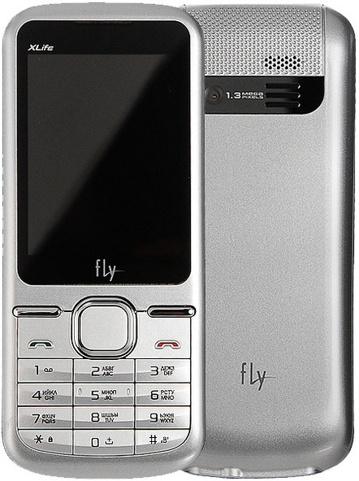
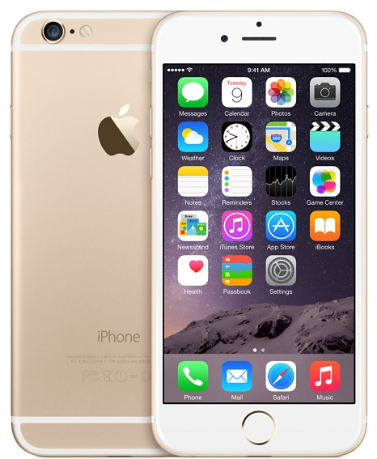
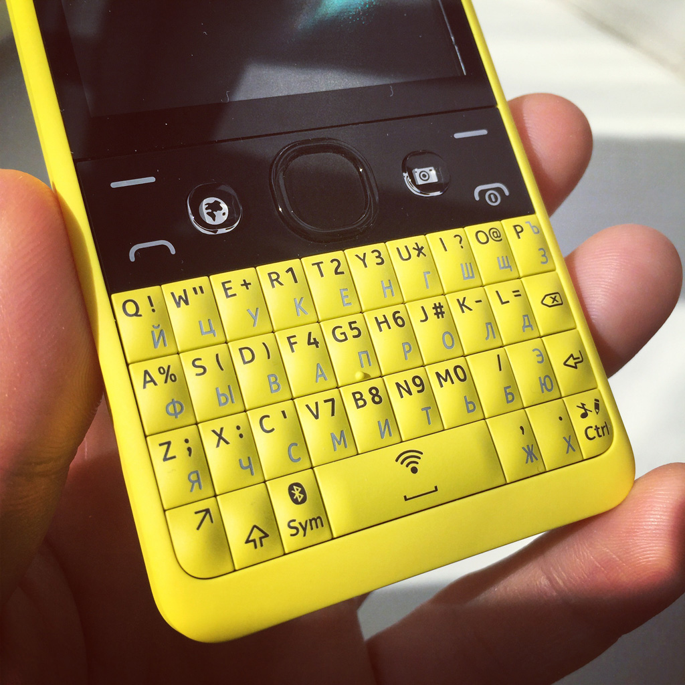

Прокси отрисовывает и отправляет результат обратно
Результат отображается до следующего действия
Не работает интерактивный JavaScript
Не подгружаются веб-шрифты
Не работает CSS-графика
Ужасный браузер!
Opera Mini в России
12 000 000 уникальных пользователей
12 000 000 000 страниц просмотрено
3 ПБ данных прошло через сервера
0,3 ПБ вернулось обратно в сжатом виде
И это только в апреле 2015 года.



Самые хиленькие устройства в вебе (простые мобильные телефоны) имеют те же возможности, что и самые крутые из новых (умные часы). Всегда разрабатывайте для всех.